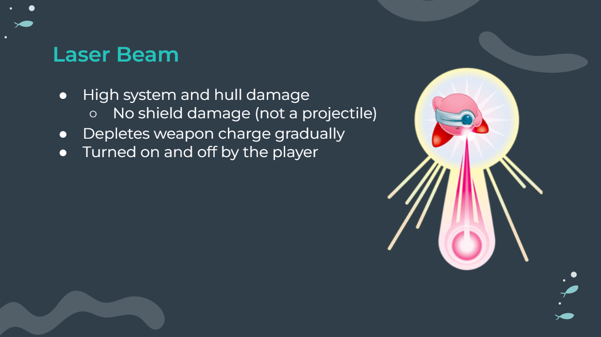
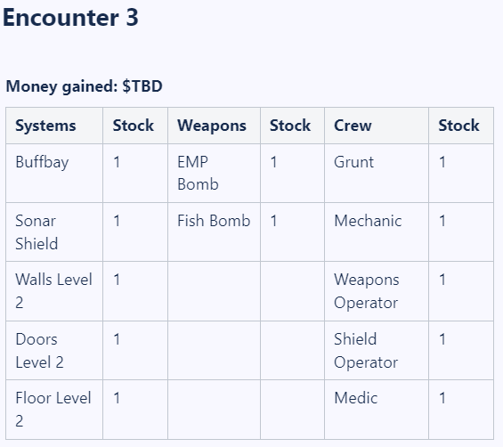

End of Sprint 1 and start of Sprint 2 (10/2/22 to 10/16/22)
Introduction
In the last 2 weeks we held our first end-of-sprint full team meeting and began work on our second sprint.
I gave my first design pitch and started balancing Project: Light's in-game shops with my vision of early, middle, and late-game equipment.
End of Sprint 1: Design Pitch
At the end of sprint 1 the full Project: Light team got together in-person to playtest and share feedback. I could not make the first in-person meeting
earlier in the semester so meeting my teammates and project leads in person was awesome! I attended an in-person work session the day before, but most
project members opted to attend the work session the day before that (Friday instead of Saturday), so I will keep that in mind for next time.
I spent the final week of sprint 1 revamping and revising my previous documentation and ideas, especially my oldest ideas, which needed accompanying visuals.
I successfully updated all of my documentation and it benefited my design pitch slides greatly.

The in-person meeting was extremely valuable for clarifying my ideas ("how will the player turn the laser beam on and off?")
and understanding teammates' needs ("does the programming team need to program the Super Medbay from scratch?").
Some of my concepts were pushed back to stretch goals/features, but most are making it in as features.
All in all I feel that I have a better sense of scope for Project: Light abd I'm looking forward to the next in-person meeting!
Start of Week 2: Shops and Balancing
Before starting on shop design, I first compiled a "Mega Spreadsheet" of all crew member types and systems to date that will be available
in-game. Though copying over stat values and Confluence links was menial, I also assigned a price to every item in the shop and decided
when each item first becomes available for purchase. Both of these qualities are very likely to change once I transition to game balancing.

This table represents shop offerings prior to encounter 3 of Project: Light; I created similar tables for 5 shops, corresponding
to each of the 5 planned encounters. I plan on updating these tables over time with both new items and specific values for how much
money the player receives per shop. I also chose not to include passive abilities or once-use items in the tables for now.
Although these are planned or already implemented features, I was uncertain of their functionalities when I was making the tables
and I plan on discussing them with my team during the next meeting.
Team meetings are on break for the week of 10/17 (fall break), but we will continue working on new tasks in the meantime!